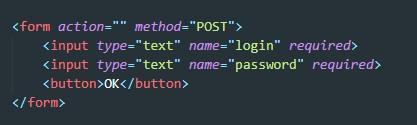
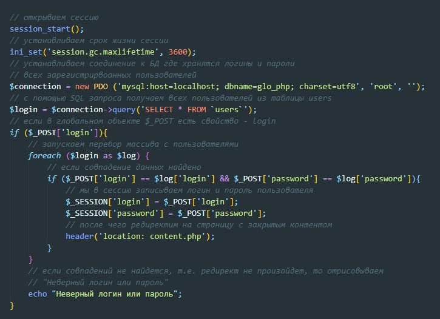
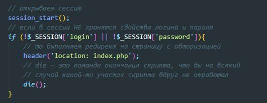
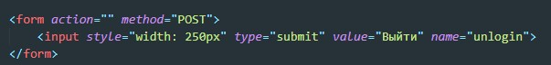
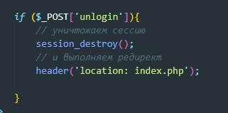
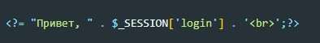

Сессии и cookies предназначены для хранения сведений о пользователях при переходах между несколькими страницами. При использовании сессий данные сохраняются во временных файлах на сервере. Файлы с cookies хранятся на компьютере пользователя, и по запросу отсылаются броузером серверу.
Здесь мы указали срок жизни сессии 3600 секунд - т.е. час
Допустим у нас есть на главной странице форма, куда мы должны вводить логин и пароль
Теперь опишем скрипт который будет срабатывать при сабмите формы авторизации
В самом файле с закрытым контентом необходимо добавить вот такой скрипт
т.е. если в глобальном объекте сессии не будет храниться логин и пароль, то выполнится редирект. Кстати если после успешной авторизации посмотреть на cookie то можно увидеть зашифрованный id, который будет указывать о наличии авторизации. т.е. сессия без cookie все равно не обходится.
Что бы выйти из личного кабинета необходимо написать вот такую форму, с одно лиш кнопкой (кнопка через input обязательна)
При сабмите такой формы в $_POST запишется свойство с ключем - unlogin. На наличие такого ключа и делаем проверку:
Что бы отобразить данные авторизованного пользователя, мы можем обратиться в глобальному объекту $_SESSION
